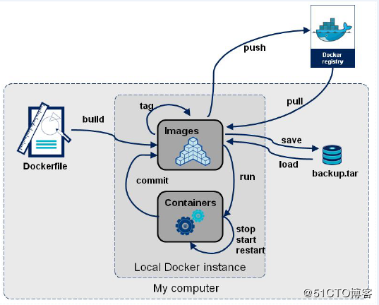

Reference Link：
(官网): https://docs.docker.com/develop/develop-images/dockerfile_best-practices/
# Dockerfile brief introduction
在 Docker 中创建镜像最常用的方式，就是使用 Dockerfile。Dockerfile 是一个 Docker 镜像的描述文件，我们可以理解成火箭发射的 A、B、C、D… 的步骤。Dockerfile 其内部包含了一条条的指令，每一条指令构建一层，因此每一条指令的内容，就是描述该层应当如何构建。


# From
指明构建的新镜像是来自于哪个基础镜像
From ubuntu:18.04
# MAINTAINER
指明镜像维护着及其联系方式（一般是邮箱地址），例如：
MAINTAINER Edison Zhou <edisonchou@hotmail.com>
不过，MAINTAINER 并不推荐使用，更推荐使用 LABEL 来指定镜像作者，例如：
LABEL maintainer="edisonzhou.cn"
# RUN
构建镜像时运行的 Shell 命令，例如：
RUN ["yum", "install", "httpd"]
RUN yum install httpd
# ADD
拷贝文件或目录到镜像中，例如：
ADD <src>...<dest>
ADD html.tar.gz /var/www/html
ADD https://xxx.com/html.tar.gz /var/www/html
PS：如果是URL或压缩包，会自动下载或自动解压。
# COPY
原路径：可以是多个，甚至可以是通配符
目标路径：可以是容器内的绝对路径，也可以是相对于工作目录的相对路径 (工作目录可以用 WORKDIR 指令来指定，不需要事先创建，会自动创建)
拷贝文件或目录到镜像中，用法同 ADD，只是不支持自动下载和解压，例如：
COPY ./start.sh /start.sh
# 拷贝start.sh和src下的所有源文件到image的/home/workfile目录
COPY ./start.sh ./src/*.cpp /home/workfile
# 利用 通配符 进行复制
COPY hom* /mydir/
COPY hom?.txt /mydir/
# 拷贝文件夹, 必须在image目录中定义folder name
COPY folder /home/folder
note : COPY 会将原文件的各种数据都保留，比如 读、写、执行权限，可以通过 --chown=<user>:<group> 选项来改变文件的所属用户及所属组。
Although ADD and COPY are functionally similar, generally speaking, COPY is preferred. That’s because it’s more transparent than ADD .
# WORKDIR
为 RUN、CMD、ENTRYPOINT 以及 COPY 和 AND 设置工作目录，例如：
WORKDIR /home/zhan
# VOLUME
指定容器挂载点到宿主机自动生成的目录或其他容器，例如：
VOLUME ["/var/lib/mysql"]
PS：一般不会在Dockerfile中用到，更常见的还是在docker run的时候指定-v数据卷。
# EXPOSE
声明容器运行的服务端口，例如：
EXPOSE 80 443
# CMD
启动容器时执行的 Shell 命令， 会被docker run命令行指定的参数所覆盖 ，例如：
CMD ["-C", "/start.sh"]
CMD ["/usr/sbin/sshd", "-D"]
CMD /usr/sbin/sshd -D
# ENTRYPOINT
启动容器时执行的 Shell 命令，同 CMD 类似，只是由 ENTRYPOINT 启动的程序不会被 docker run 命令行指定的参数所覆盖，而且，这些命令行参数会被当作参数传递给 ENTRYPOINT 指定指定的程序，例如：
ENTRYPOINT ["/bin/bash", "-C", "/start.sh"]
ENTRYPOINT /bin/bash -C '/start.sh'
PS：Dockerfile文件中也可以存在多个ENTRYPOINT指令，但仅有最后一个会生效。
# ENV
设置环境内环境变量，例如：
ENV MYSQL_ROOT_PASSWORD 123456
ENV JAVA_HOME /usr/local/jdk1.8.0_45
ENV http_proxy http://proxy:913
# USER
为 RUN、CMD 和 ENTRYPOINT 执行 Shell 命令指定运行用户，例如：
USER <user>[:<usergroup>]
USER <UID>[:<UID>]
USER edisonzhou
# HEALTHCHECK
告诉 Docker 如何测试容器以检查它是否仍在工作，即健康检查，例如：
HEALTHCHECK --interval=5m --timeout=3s --retries=3 \
CMD curl -f http:/localhost/ || exit 1
其中，一些选项的说明：
--interval=DURATION (default: 30s)：每隔多长时间探测一次，默认30秒
-- timeout= DURATION (default: 30s)：服务响应超时时长，默认30秒
--start-period= DURATION (default: 0s)：服务启动多久后开始探测，默认0秒
--retries=N (default: 3)：认为检测失败几次为宕机，默认3次
一些返回值的说明：
0：容器成功是健康的，随时可以使用
1：不健康的容器无法正常工作
2：保留不使用此退出代码
# ARG
在构建镜像时，指定一些参数，例如：
FROM centos:6
ARG user # ARG user=root
USER $user
这时，我们在docker build时可以带上自定义参数user了，如下所示：
docker build --build-arg user=edisonzhou Dockerfile .
# 配置 proxy
# 第一种：配置 proxy 环境变量，有时候需要加 http 和 https 两个 proxy, 而下面两个还没找出怎么加两个 proxy.
ENV http_proxy=http://child-prc.intel.com:913
ENV https_proxy=http://child-prc.intel.com:913
ENV HTTP_PROXY=http://child-prc.intel.com:913
ENV HTTPS_PROXY=http://child-prc.intel.com:913
# 第二种：在 Dockerfile 中命令行加上 proxy
RUN pip install Flask-JSON==0.3.3 --proxy=http://child-prc.intel.com:913 |
# (推荐) 第三种：在构建 image 命令行上加 proxy, 这样不会写道 image 里，给其他人用时候不会暴漏自己公司的 proxy
docker build --pull -t "productpage:${VERSION}" -t "productpage:latest" --build-arg HTTP_PROXY=http://child-prc.intel.com:913 --build-arg HTTPS_PROXY=http://child-prc.intel.com:913 . |
然后在 Dockerfile 里面你应该添加
ARG HTTP_PROXY
ARG HTTPS_PROXY
# Use cases
# Case1: 编译执行在一个 image 里
$ cd /home/zhan | |
$ touch test.c |
test.c 添加如下内容
#include <stdio.h> | |
int main(int argc, char* argv[]) | |
{ | |
printf("Hello World!\n"); | |
return 0; | |
} |
$ touch Dockerfile |
Dockerfile 添加如下内容
From ubuntu:18.04
LABEL maintainer="tester.com"
RUN mkdir -p /home/zhan
WORKDIR /home/zhan
COPY test.c .
ENV http_proxy http://proxy:913
RUN apt-get update
RUN apt-get install gcc -y
RUN gcc -g test.c -o test.o
#CMD ["/bin/bash"]
CMD ["./test.o"]
构建 image
$ docker build -t dockerfile-01:1.0 . | |
$ docker images | |
REPOSITORY TAG IMAGE ID CREATED SIZE | |
dockerfile-01 1.0 cd9a95fccaa9 45 minutes ago 207MB | |
ubuntu 18.04 4e5021d210f6 6 weeks ago 64.2MB |
- 第一种执行应用方式：启动容器直接运行可执行文件
$ docker run --rm dockerfile-01 | |
Hello World! |
- 第二种执行应用方式：启动容器，进入容器，再手动执行可执行文件
$ docker run -itd --name test01 dockerfile-01 /bin/bash | |
$ docker exec -it test01 /bin/bash | |
root@bfb87ec4b27a:/home/zhan# ls | |
test.c test.o | |
root@bfb87ec4b27a:/home/zhan# |
进入容器可以看到直接到 /home/zhan 目录，有 test.c 和 test.o 两个文件
# Case2: 编译执行在两个 image 里
因为编译生成的 image 非常大，因此把编译生成的文件再 copy 到另一个 image 就减小了体积
Dockfile 内容如下
From ubuntu:18.04 as builder # 基于 ubuntu:18.04 创建第一个 image | |
LABEL maintainer="tester.com" | |
RUN mkdir -p /home/zhan | |
WORKDIR /home/zhan | |
COPY test.c . | |
ENV http_proxy http://proxy:913 | |
RUN apt-get update | |
RUN apt-get install gcc -y | |
RUN gcc -g test.c -o test.o | |
FROM ubuntu:18.04 # 基于 ubuntu:18.04 再创建第二个 image | |
WORKDIR /root/ | |
# 从上面的 image "builder" 拷贝编译好的可执行文件 /home/zhan/test.o 文件到当前 image 的 /root/ 目录 | |
COPY --from=builder /home/zhan/test.o . | |
CMD ["./test.o"] |
构建 image
$ docker build -t dockerfile-01:2.0 . | |
$ docker images | |
REPOSITORY TAG IMAGE ID CREATED SIZE | |
dockerfile-01 2.0 f29fa900630d 5 seconds ago 63.3MB | |
dockerfile-01 1.0 cd9a95fccaa9 45 minutes ago 207MB | |
ubuntu 18.04 4e5021d210f6 6 weeks ago 63.2MB |
可以看到新生成的两个 image， 一个 image 为 <none>:<none> 大小为 207MB, 另一个 image 为 dockerfile-01:2.0 大小为 64.2MB
以后就可以用 dockerfile-01:2.0 作为项目中的应用 docker 容器
- 第一种执行应用方式：启动容器直接运行可执行文件
$ docker run --rm dockerfile-01:2.0 | |
Hello World! |
- 第二种执行应用方式：启动容器，进入容器，再手动执行可执行文件
$ docker run -itd --name test02 dockerfile-01:2.0 /bin/bash | |
baef91591402ac368816b8baf9251859db9aa9e378845d88009ad8dffdcb8028 | |
$ docker exec -it test02 /bin/bash | |
root@baef91591402:~# ls | |
test.o | |
root@baef91591402:~# |
进入容器可以看到直接进入 /root 目录，只有可执行文件 test.o
# Additional
找一个目录新建两个文件 app.js 和 Dockerfile
root@alpha:/home/zhan/images_test# ls | |
app.js Dockerfile |
app.js
const http = require('http'); | |
const os = require('os'); | |
console.log("Kubia server starting ..."); | |
var handler = function(request, response) { | |
console.log("Received request from" + request.connection.remoteAddress); | |
response.writeHead(200); | |
response.end("You've hit " + os.hostname() + "\n"); | |
}; | |
var www = http.createServer(handler); | |
www.listen(8080); |
Dockerfile
FROM node:7
ADD app.js /app.js
ENTRYPOINT ["node","app.js"]
运行如下命令
$ docker build -t kubia . | |
$ docker images | |
$ docker run --name kubia-container -p 8081:8080 -d kubia:latest | |
$ curl 10.239.140.186:8081 或者 curl http://10.239.1n40.186:8081 (linux添加proxy如child-prc.intel.com:913后用这行命令) | |
You've hit fef0dd414fe4 | |
// 浏览器输入http://localhost:8081也能返回同样的container ID, | |
// 如果机器没有添加proxy代理用 $ curl localhost:8081 就可以 | |
$ docker exec -it kubia-container1 bash | |
$ cat /etc/hostname | |
fef0dd414fe4 // 发现container的hostname和container ID是一样的十六进制数 | |
$ ps aux // 查看容器内运行的进程 | |
USER PID %CPU %MEM VSZ RSS TTY STAT START TIME COMMAND | |
root 1 0.0 0.3 813600 26092 ? Ssl 06:58 0:00 node app.js | |
root 11 0.1 0.0 20244 3232 pts/0 Ss 07:24 0:00 bash | |
root 17 0.0 0.0 17500 2048 pts/0 R+ 07:26 0:00 ps aux | |
root@fef0dd414fe4:/# | |
在宿主主机上运行这个命令 $ ps aux | grep app.js | |
root 12028 0.0 0.0 21532 1044 pts/1 S+ 15:26 0:00 grep --color=auto app.js | |
root 30631 0.0 0.3 813600 26092 ? Ssl 14:58 0:00 node app.js | |
发现进程的ID在容器中与主机上不同, 容器使用独立的PID Linux命名空间并且有着独立的系列号，完全独立于进程树. | |
正如拥有独立的进程树一样，每个容器也拥有独立的文件系统. | |
容器内的应用不仅拥有独立的文件系统，还有进程、用户、主机名和网络接口. |
# Dockerfile 逆向
$ docker history dockerfile-01:1.0 | |
IMAGE CREATED CREATED BY SIZE COMMENT | |
01c4f6c6dc0b 3 hours ago /bin/sh -c #(nop) CMD ["./test.o"] 0B | |
9237cc69b6b9 3 hours ago /bin/sh -c gcc -g test.c -o test.o 10.8kB | |
4e775aeb3a93 3 hours ago /bin/sh -c apt-get install gcc -y 124MB | |
4524eb24d841 3 hours ago /bin/sh -c apt-get update 34.2MB | |
91c7861b5cb3 3 hours ago /bin/sh -c #(nop) ENV http_proxy=http://chi… 0B | |
1ca351444c36 3 hours ago /bin/sh -c #(nop) COPY file:48688e4f8a2a718c… 102B | |
82e8f67a2e3f 3 hours ago /bin/sh -c #(nop) WORKDIR /home/zhan 0B | |
21555537a646 3 hours ago /bin/sh -c mkdir -p /home/zhan 0B | |
14b43e5758aa 3 hours ago /bin/sh -c #(nop) LABEL maintainer=tester.c… 0B | |
56def654ec22 6 weeks ago /bin/sh -c #(nop) CMD ["/bin/bash"] 0B | |
<missing> 6 weeks ago /bin/sh -c mkdir -p /run/systemd && echo 'do… 7B | |
<missing> 6 weeks ago /bin/sh -c [ -z "$(apt-get indextargets)" ] 0B | |
<missing> 6 weeks ago /bin/sh -c set -xe && echo '#!/bin/sh' > /… 745B | |
<missing> 6 weeks ago /bin/sh -c #(nop) ADD file:4974bb5483c392fb5… 63.2MB |
# 遇到的问题
# docker proxy
docker pull ubuntu 等系统镜像后登陆上去，配置公司 proxy 后无法连接网络，apt-get update 无法执行
解决方案：修改主机上的文件 /etc/docker/daemon.json 内容如下，添加主机 IP:
{ "insecure-registries": ["10.239.140.186"] }
之后重启 docker
$ systemctl daemon-reload | |
$ systemctl restart docker.service |
再次登陆容器配置好 proxy, apt-get update 就可以执行了
# 删除所有 <none> 镜像
一条命令 ko
docker rmi `docker images | grep "<none>" | awk '{print $3}'` |
如果确定所有 none 镜像确实没用，直接加个 - f 强制删除，谨慎
docker rmi -f `docker images | grep "<none>" | awk '{print $3}'` |